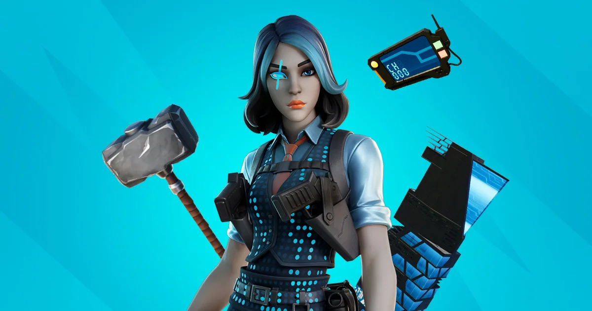
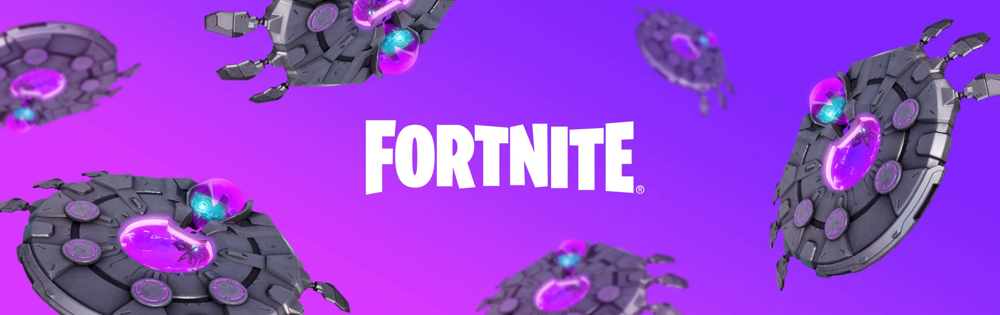

Answer Questions
A short question set narrows your idea to one exact game type, then lays out the plan underneath it.
Ready today
Answer questions
Forge · free to use
Answer a few questions about your idea and Forge names the exact game type, the UEFN devices it needs, and the five build steps that get it built.
Ways in
However you start, you leave with the same thing: a game type, the devices it needs, and five build steps in order.
A short question set narrows your idea to one exact game type, then lays out the plan underneath it.
Spin the wheel for a game type, a twist and a brand to build around - then keep the parts you like and roll again.
Describe the idea in your own words. The AI asks the follow-ups and turns the conversation into the same plan.
Library



Sourced from 74 drafts across 10 category basics.
What you walk away with
Complete · 3 of 3 stages
Not a genre label - the game type your idea actually is, with how a round is won.
Named UEFN devices from the researched set, and what each one is doing in your island.
The build order, five steps long, so the first thing you open in UEFN is obvious.
